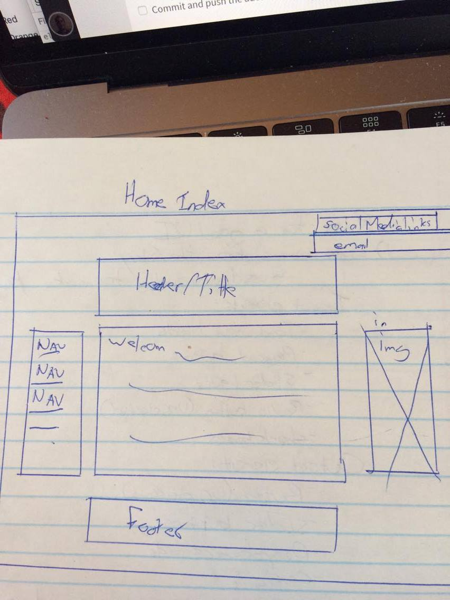

From Paper to Screen
What is a responsive site, and is it important?
Responsive sites adjust to the size of the screen/browser window, so that it is still easy to view all the content. Some examples would be pictures that re-size themselves, or menu bars that become a drop-down list.
What is a mobile first design, and why is it important?
Mobile first design, is simply designing your website for mobile first...When designing your website first imagine how you would like it to appear on a mobile device. Once you have the design of the mobile site/screen size then scale your design to larger and larger screens. This is important because we want our website to be as fast as possible for users. By designing for the mobile first, then all the relevant code for the mobile site is at the top of the code. Therefore there is no unused or irrelevant code.
If we were to design our desktop/large screen website first, then scale down to a mobile site our mobile device would first have to decipher all of the code for the desktop, and then be told not use it. For example the desktop site may have a list of external links. These external links are not all that important to the overall site. Therefore, they are removed from the mobile site. If this site was designed desktop first, our mobile device would read the code for the external links implement the code, then be told further down the code to remove the links not, which is not very efficient and could potential slow down the sites speed when viewed on mobile platforms.
What is a framework, and what are the pros and cons to using one?
A framework is essentially a packaged set code, that anyone can get a hold of and use. The packaged code, provides a structure from which to build a website. Frameworks are good to use because they can provide the basis of our website, without us having to re-write entirely new code. If you don't have to make something from scratch, then don't, use a framework. Drawbacks of frameworks, is that you need understand how the framework works. The framework will have pre-defined class's and you need to know what they do inorder to best use the framework. Learning all of this takes a lot of time and can be a slow processes. Also there is likely to be a bunch of code in the Framework that you will never use, which makes your site less efficient.
What is a wireframe, and why do we use it?
Wireframe our sketches of how we want our site to look. We use them because it helps us understand how best to design our site, so that the important information is seen by the user. Examples of my wireframs are below.
Home Page - Mobile
Home Page - Desktop

Blog - Mobile

Blog - Desktop
Difficulties I faced while implementing my wireframes
I had a number of troubles trying to implement my wireframes.
- I created a dropdown menu, but couldn't figure out how to reveal it's contents in the desktop version of the site. I ultimately scrapped the idea for now because I was using the "hover" tag and this would not work on a mobile (as far as I know), and the "onClick" command requires JS, which at this point in time (Oct 19, 2017) I'm not familar with. And I quite like how it looks without the dropdown menu.
- Creating and layering the rectangles in the background caused a few issues. It was difficult to get the boxes to appear where I wanted them to on the screen, and then I had to make sure the z-index was correct so they would stack on top of each other in the correct order.
- Making the background, navbar and image all remain static was a challenge. When I declared a position to be "fixed" in CSS it would often move the content elsewhere on the page. Therefore I had to take close looks at my HTML and CSS in order to figure out what was wrong, and make it all work. For example, I first had all the social media icons aligned how they are now, but when I "fixed" there position, they all appeared on top of one another. So it took some time, but I eventually got it sorted out.
- I often that as I changed and fixed one thing, that would create another problem in an element I had previously fixed.